Landscapes
Climate, water, biodiversity and stewardship across inland and coastal savannas.
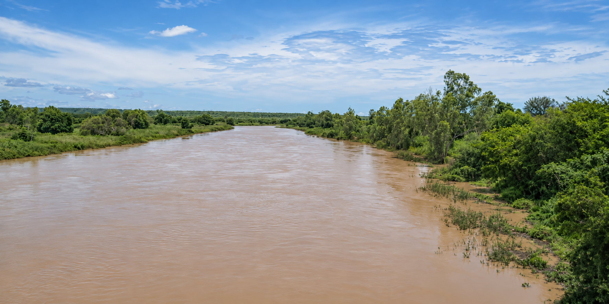
Research, innovation and policy for resilient savanna futures
SAFI connects knowledge, people and action — African-led research, innovation, indigenous knowledge and policy for resilient landscapes, healthy communities, sustainable economies and peaceful societies.
The Savannah Futures Institute works at the intersection of science, indigenous knowledge, innovation, policy and sustainable development across Africa's savanna regions.
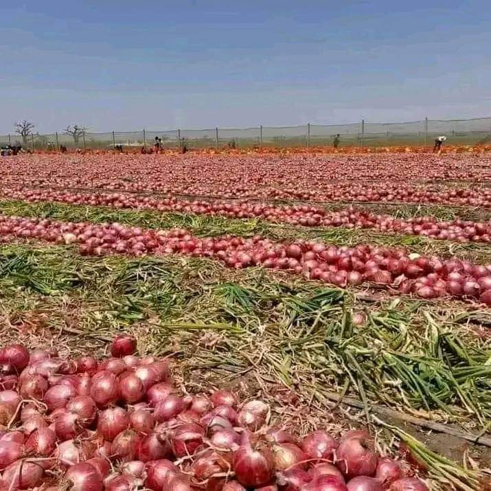
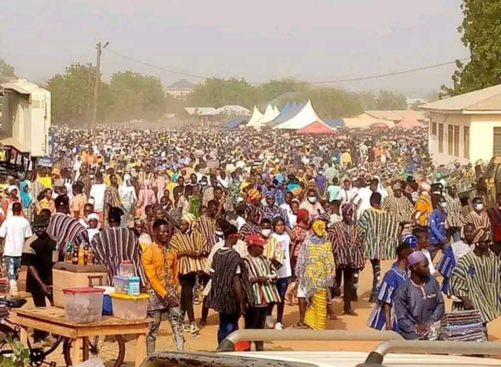
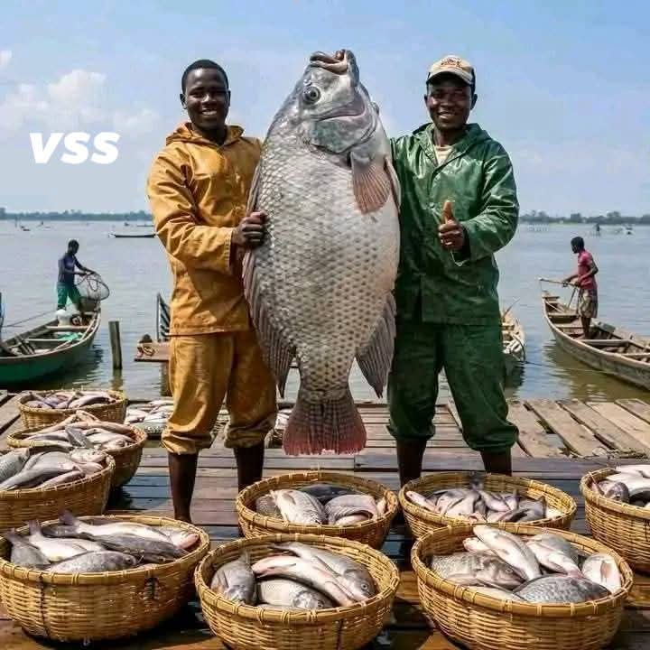
Savannas are living landscapes where people grow food, sustain livelihoods, exchange knowledge, protect biodiversity and build their futures.
Grasslands, woodlands, rivers and wetlands connect people with nature, culture, health and economic opportunity. Changes in climate, land use, health and governance affect these relationships together. SAFI studies these connections so that decisions in one area can account for their consequences in others.
Learn more
Climate, water, biodiversity and stewardship across inland and coastal savannas.
Food, markets, agroforestry and value chains that sustain communities.
Indigenous knowledge, research evidence and innovation working together.
Peace, institutions and policy choices that shape shared futures.

The Savannah Futures Institute (SAFI) is a Ghana-based, African-led organisation working at the intersection of science, indigenous knowledge, innovation, policy and sustainable development.
SAFI connects knowledge about landscapes, health, food, peace, culture and economies to help communities and decision-makers shape resilient futures. From Accra, we build partnerships with universities, governments, traditional institutions, communities, civil society, businesses and international partners.
About SAFIResearch · Innovation · Policy · Partnerships · Capacity development · Community engagement — from generating evidence to testing practical responses.
Rigorous, interdisciplinary and context-sensitive evidence across five connected centres.
Developing and testing practical responses with communities and partners.
Valuing living knowledge, cultural systems and locally grounded solutions.
Translating evidence into useful policy, strategy and decision support.
Building partnerships, capability and pathways from knowledge to impact.
Collaboration with universities, government, communities, funders and enterprise.
Specialist homes for research — collaborating across shared programmes and platforms.
Climate change, ecosystems, water, biodiversity and landscape stewardship.
Explore centre →
Climate, environmental and social determinants of health and resilient systems.
Explore centre →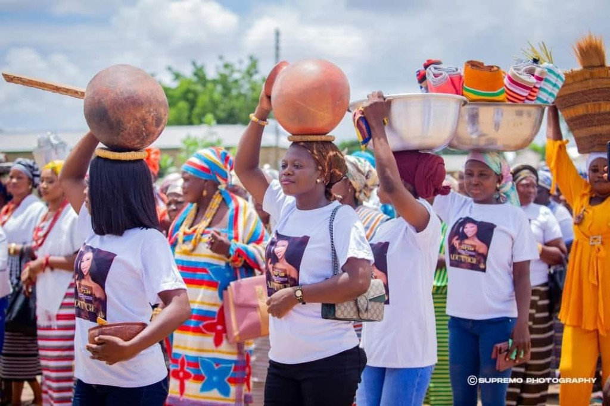
Food security, livelihoods, local value retention and inclusive opportunity.
Explore centre →Watch field video — carrot harvest
Full screen on centre page →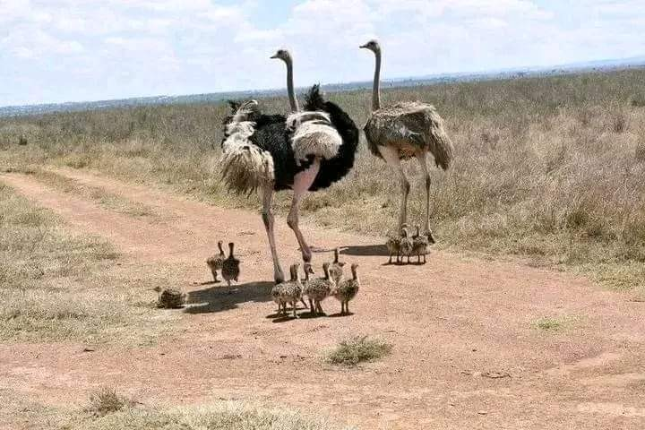
Governance, mobility, conflict transformation and human security.
Explore centre →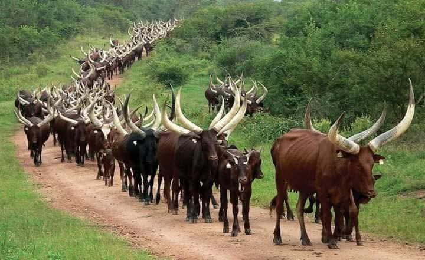
Living knowledge, governance, language, heritage and social change.
Explore centre →
Data, policy labs, synthesis, learning and collaborative tools for all centres.
Explore platforms →
Our shared process for turning evidence into practical outcomes — developed with the communities and institutions who use the findings.
With the people who will use the findings
Interdisciplinary, rigorous and context-sensitive
Policy dialogue, innovation and stakeholder engagement
Living labs and community-based research
Assess what works and what can be responsibly applied elsewhere
SAFI develops programmes that translate research and partnerships into practical action. Active projects are listed first; longer-term collaborations in development follow.
Food systems, local value chains and biological resources in savanna landscapes.
View project →Landscape connectivity, human–wildlife interfaces and transboundary savanna corridors.
View project →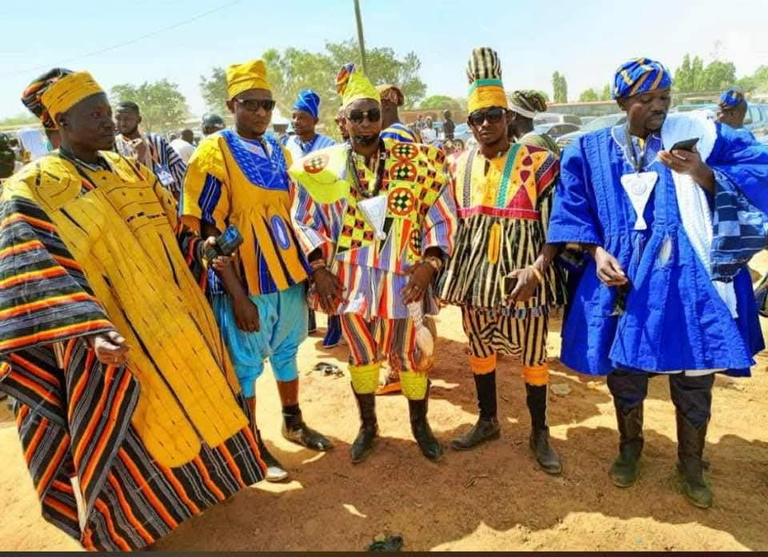
Proposed collaboration with the Ghana National Commission for UNESCO.
View programme →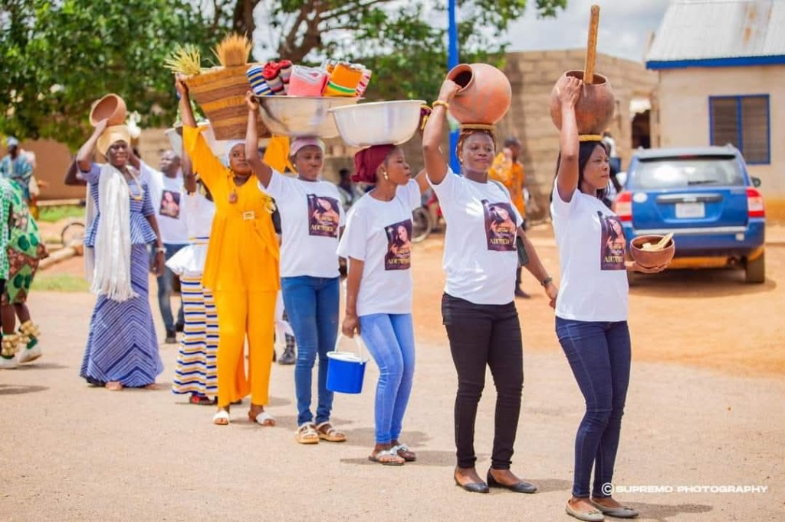
Evidence-informed regeneration in Bawku and selected neighbouring areas.
View programme →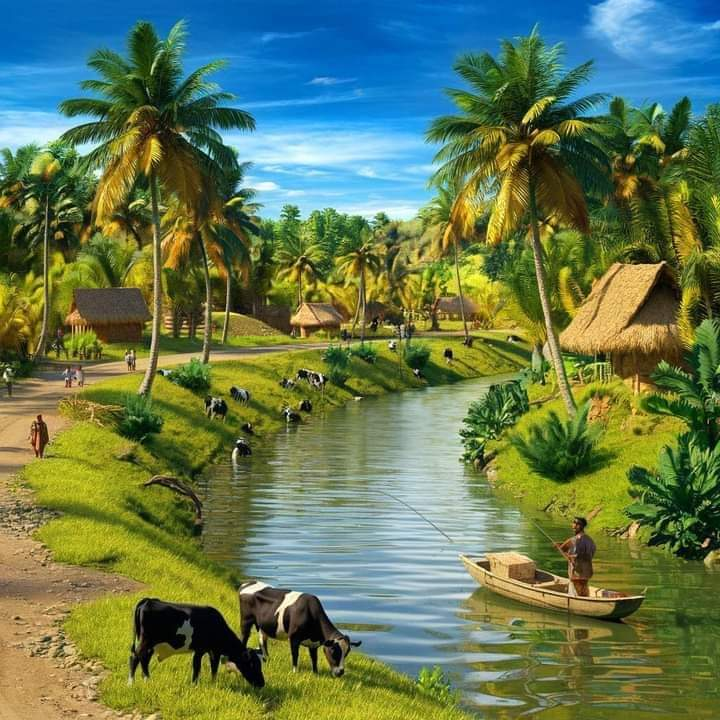
Cross-cutting themes guiding collaboration across all five centres.
All programmes →SAFI measures impact through knowledge generated, capability strengthened, partnerships built, policies informed, innovations tested and community outcomes supported — using verified evidence and documented case studies.
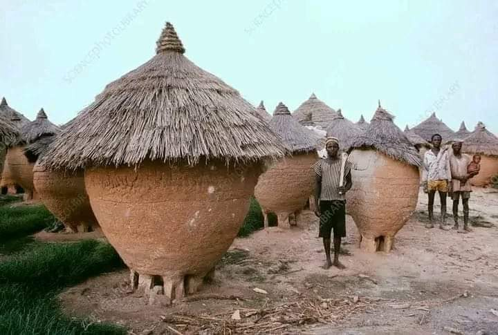
Impact pages will feature verified case studies, programme outcomes and evidence blocks as documented work becomes available.
Explore impactExplore SAFI research, policy briefs, working papers, reports, case studies, commentaries and learning resources.
Transformative savanna challenges require collaboration across disciplines, institutions and communities. SAFI welcomes partnerships that address clear questions, build lasting capability and contribute to practical solutions.

Whether you are a researcher, university, government institution, community organisation, investor, foundation or development partner, we welcome conversations that can turn knowledge into action.
Partner with SAFI Contact us